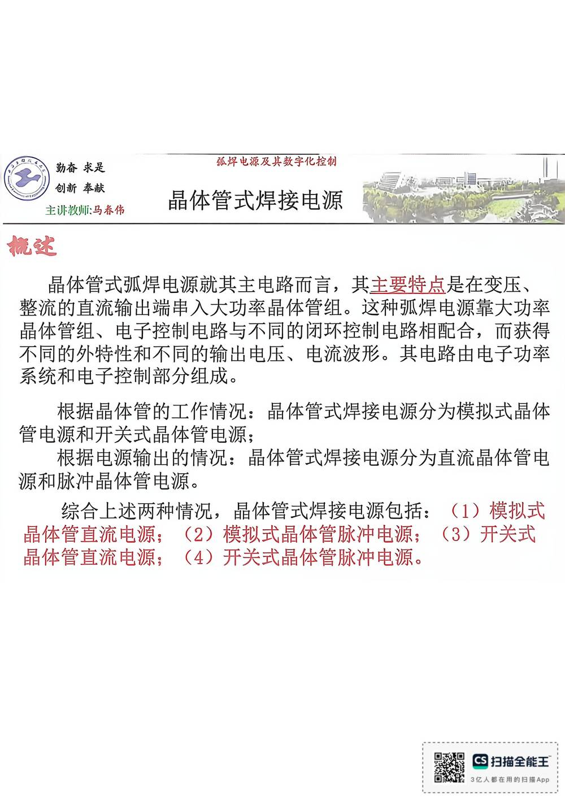

13 手写笔记/6~8周/h-w2-013 管电源和开关式晶体管电源；
h-w2-013 管电源和开关式晶体管电源；
📷 原图：
6~8周 焊接电源(差最后一节课)(1).pdf第 13 页（整页扫描，本库内嵌h-w2-013.jpg）
管电源和开关式晶体管电源；

本页文字（OCR 整理）
- 主许教师：马养伟
- 晶体管式弧焊电源就其主电路而言，其主要特点是在变压、
- 整流直流输出端串入大功率晶体管组。这种弧焊电源靠大功率
- 晶体管组、电子控制电路与不同的闭环控制电路相配合，而获得
- 不同的外特性和不同的输出电压、电流波形。其电路由电子功率
- 系统和电子控制部分组成。
- 根据晶体管的工作情况：晶体管式焊接电源分为模拟式晶体
- 管电源和开关式晶体管电源；
- 根据电源输出的情况：晶体管式焊接电源分为直流晶体管电
- 源和脉冲晶体管电源。
- 综合上述两种情况，晶体管式焊接电源包括：（1）模拟式
- 晶体管直流电源：（2）模拟式晶体管脉冲电源；（3）开关式
- 晶体管直流电源：（4）开关式晶体管脉冲电源。
本页重点（自动标记：含"定义/特点/要求/结论/公式"等，或与课件原句高度一致）
- 晶体管式弧焊电源就其主电路而言，其主要特点是在变压、
- 系统和电子控制部分组成。
OCR 说明
文字由 macOS Vision 识别手写体/翻拍页面得到，错字难免（如"弧"误识为"孤"）；重点标记据此推断，请以页图为准。
对应讲义页
关联
- ← 上一页 · 总览 · 下一页 →
- 讲义：00 第4章 电子控制型 导航 · 概念：04 概念地图